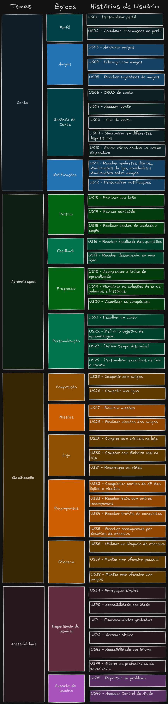

Product Backlog#
Neste documento, apresentaremos o Product Backlog ou Backlog do Produto, um dos principais artefatos da modelagem ágil baseada no Scrum. O Product Backlog é uma lista contendo todas as funcionalidades desejadas para um produto, no contexto do Scrum o Product Backlog seria definido pelo Product Owner e evoluído ao longo do desenvolvimento do projeto.
O Product Backlog consiste em uma tabela organizada e priorizada com tudo que precisa ser desenvolvido em um produto. O backlog contém funcionalidades, melhorias, correções de bugs, mudanças técnicas e qualquer outro item que agregue valor ao produto. Cada item do backlog é chamado "user story" ou "história de usuário".
Metodologia#
A partir da análise dos Rich Pictures e dos Requisitos Elicitados durante a etapa de elicitação foi elaborado o Product Backlog, utilizando um quadro na ferramenta Excalidraw.
A estrutura do Product Backlog foi separada em diferentes elementos de diferentes granulanidades, sendo composta pelos Temas que abrangem um tema ou área de funcionalidades, os Épicos que definem grupos de funcionalidades relacionadas, e por fim as Histórias de Usuário que definem de forma descrita e mais específica diferentes funcionalidades do aplicativo do Duolingo.
No quadro, que pode ser visualizado na Figura 01, fizemos a definição dos Temas, Épicos e os títulos das Histórias de Usuário:
 Figura 01: Quadro do Product Backlog
Autores: Felipe Amorim de Araújo, Raquel Ferreira Andrade, 2024
-
Temas: Cada tema representa uma área ampla de funcionalidades do aplicativo. Essas áreas foram identificadas a partir das necessidades centrais dos usuários e dos objetivos do aplicativo, como "Conta", "Aprendizagem", "Gamificação" e "Acessibilidade".
-
Épicos: Dentro de cada tema, os épicos agrupam funcionalidades relacionadas de forma mais específica, descrevendo as principais capacidades que o produto deve oferecer para suportar o tema em questão. Por exemplo, dentro do tema "Gamificação", temos épicos como "Competição" e "Missões", que englobam funcionalidades voltadas para a motivação e o engajamento dos usuários por meio de elementos de jogos.
-
Histórias de Usuário: As histórias de usuário, por sua vez, descrevem em detalhes as funcionalidades específicas do aplicativo, seguindo o formato padrão: "Como um [tipo de usuário], eu quero [funcionalidade], para que [benefício]". Essa estrutura garante que cada história esteja focada nas necessidades do usuário e nos benefícios que ele obterá ao usar o aplicativo.
Após a criação do quadro foi feito o detalhamento de cada um dos Temas, Épicos e Histórias de Usuário. Cada elemento com um ID que serve de identificação e rastreabilidade.
Tabela 01 - Temas#
| ID | Título | Descrição |
|---|---|---|
| T01 | Conta | Este tema aborda as funcionalidades relacionadas ao gerenciamento de contas e perfis dos usuários |
| T02 | Aprendizagem | Este tema envolve as funcionalidades referentes ao processo de aprendizagem e prática de idiomas |
| T03 | Gamificação | Este tema envolve estratégias e elementos de jogos para engajar e motivar os usuários |
| T04 | Acessibilidade | Este tema abrange funcionalidades que garantem que o aplicativo seja acessível para os usuários e que eles tenham uma boa experiência na navegação |
Autores: Felipe Amorim de Araújo, Raquel Ferreira Andrade, 2024
Tabela 02 - Épicos#
| Tema | ID | Título | Como um | Eu quero... | Para... |
|---|---|---|---|---|---|
| T01 | E01 | Perfil | Estudante | Acessar e gerenciar meu perfil | Visualizar minhas informações pessoais |
| T01 | E02 | Amigos | Estudante | Interagir com meus amigos | Participar de competições e desafios conjuntos e compartilhar meu progresso |
| T01 | E03 | Gerência de conta | Estudante | Gerenciar minha conta | Manter minhas informações atualizadas e seguras |
| T01 | E04 | Notificações | Estudante | Receber notificações | Lembrar-me da ofensiva diária e ficar atualizado sobre os eventos e interações relevantes |
| T02 | E05 | Prática | Estudante | Praticar o(s) idiomas desejados | Aprender e/ou melhorar meu aprendizado |
| T02 | E06 | Feedback | Estudante | Receber feedback sobre as questões realizadas e o meu desempenho | Identificar erros e ajustá-los, e melhorar o meu rendimento |
| T02 | E07 | Progresso | Estudante | Visualizar meu progresso de aprendizado | Acompanhar meu desempenho e progresso nos cursos |
| T02 | E08 | Personalização | Estudante | Personalizar minha experiência de aprendizado | Adaptar o aplicativo às minhas preferências e necessidades |
| T03 | E09 | Competição | Estudante | Participar de competições | Testar minhas habilidades e conhecimento contra amigos e outros usuários |
| T03 | E10 | Missões | Estudantes | Realizar e completar missões | Manter minha motivação e obter recompensas |
| T03 | E11 | Loja | Estudante | Acessar a loja | Comprar itens adicionais, como vidas e cristais, e melhorar minha experiência |
| T03 | E12 | Recompensas | Estudante | Ganhar recompensas | Ser recompensado pelas lições, missões e competições realizadas e me manter motivado |
| T03 | E13 | Ofensiva | Estudante | Participar das ofensivas | Manter o compromisso de realizar as lições todos os dias e receber recompensas |
| T04 | E14 | Experiência de usuário | Estudante | Ter uma experiência fluida e intuitiva no aplicativo | Navegar facilmente pelo aplicativo |
| T04 | E15 | Suporte ao usuário | Estudante | Acessar suporte e ajuda quando necessário | Obter assistência para dúvidas e/ou dificuldades |
Autores: Felipe Amorim de Araújo, Raquel Ferreira Andrade, 2024
Tabela 03 - Histórias de Usuário#
| Tema | Épico | ID | Título | Como um | Eu quero... | Para... | Prioridade | Status |
|---|---|---|---|---|---|---|---|---|
| T01 | E01 | US01 | Personalizar perfil | Usuário do Duolingo | Personalizar meu perfil com foto e informações | Expressar minha personalidade e tornar meu perfil único | Alta | Implementado |
| T01 | E01 | US02 | Visualizar informações no perfil | Usuário do Duolingo | Visualizar minhas informações de perfil, como nome e progresso | Acompanhar meu progresso e ver como os outros me veem | Média | Implementado |
| T01 | E02 | US03 | Adicionar amigos | Usuário do Duolingo | Adicionar amigos na minha conta | Compartilhar meu progresso e competir com eles | Média | Implementado |
| T01 | E02 | US04 | Interagir com amigos | Usuário do Duolingo | Interagir com amigos por meio de mensagens e desafios | Tornar a experiência de aprendizado mais social e competitiva | Média | Implementado |
| T01 | E02 | US05 | Receber sugestões de amigos | Usuário do Duolingo | Receber sugestões de novos amigos com base nos meus interesses | Expandir minha rede social no aplicativo | Baixa | Implementado |
| T01 | E03 | US06 | CRUD da conta | Usuário do Duolingo | Criar, ler, atualizar e deletar minha conta | Ter controle total sobre minha conta | Alta | Implementado |
| T01 | E03 | US07 | Acessar conta | Usuário do Duolingo | Acessar minha conta de qualquer dispositivo | Continuar meu aprendizado de onde parei | Alta | Implementado |
| T01 | E03 | US08 | Sair da conta | Usuário do Duolingo | Sair da minha conta de forma segura | Proteger minhas informações pessoais | Alta | Implementado |
| T01 | E03 | US09 | Sincronizar em diferentes dispositivos | Usuário do Duolingo | Sincronizar meus dados de aprendizado em diferentes dispositivos | Acessar minhas informações de qualquer lugar | Média | Implementado |
| T01 | E03 | US10 | Salvar várias contas no mesmo dispositivo | Usuário do Duolingo | Salvar múltiplas contas no mesmo dispositivo | Facilitar o uso compartilhado do dispositivo | Média | Implementado |
| T01 | E04 | US11 | Receber lembretes diários, atualizações da liga, novidades e atualizações sobre amigos | Usuário do Duolingo | Receber notificações diárias e atualizações | Manter-me informado sobre meu progresso e novidades do aplicativo | Média | Implementado |
| T01 | E04 | US12 | Personalizar notificações | Usuário do Duolingo | Personalizar quais notificações eu recebo e quando | Evitar interrupções e focar no que é importante para mim | Média | Implementado |
| T02 | E05 | US13 | Praticar uma lição | Estudante de idiomas | Praticar uma lição de forma interativa | Melhorar minhas habilidades linguísticas | Alta | Implementado |
| T02 | E05 | US14 | Revisar conteúdo | Estudante de idiomas | Revisar lições anteriores | Reforçar o aprendizado e corrigir erros passados | Alta | Implementado |
| T02 | E05 | US15 | Realizar testes de unidade e seção | Estudante de idiomas | Fazer testes para verificar meu conhecimento em uma unidade ou seção | Avaliar meu progresso e identificar áreas de melhoria | Média | Implementado |
| T02 | E06 | US16 | Receber feedback das questões | Estudante de idiomas | Receber feedback detalhado após cada questão | Compreender meus erros e aprender com eles | Alta | Implementado |
| T02 | E06 | US17 | Receber desempenho em uma lição | Estudante de idiomas | Ver um resumo do meu desempenho após cada lição | Avaliar meu progresso e motivar-me a melhorar | Média | Implementado |
| T02 | E07 | US18 | Acompanhar a trilha de aprendizado | Estudante de idiomas | Acompanhar meu progresso na trilha de aprendizado | Manter-me motivado e ver o quanto já evoluí | Alta | Implementado |
| T02 | E07 | US19 | Visualizar as coleções de erros, palavras e histórias | Estudante de idiomas | Acessar coleções de erros comuns, palavras e histórias que já pratiquei | Focar em melhorar onde mais erro e reforçar meu vocabulário | Média | Implementado |
| T02 | E07 | US20 | Visualizar as conquistas | Usuário do Duolingo | Ver minhas conquistas no aplicativo | Sentir-me recompensado e motivado a continuar | Média | Implementado |
| T02 | E08 | US21 | Escolher um curso | Novo usuário | Escolher um curso de idioma de acordo com meu interesse | Iniciar meu aprendizado no idioma escolhido | Alta | Implementado |
| T02 | E08 | US22 | Definir o objetivo de aprendizagem | Novo usuário | Definir um objetivo de aprendizado diário ou semanal | Manter um ritmo de estudo consistente e alcançar meus objetivos | Alta | Implementado |
| T02 | E08 | US23 | Definir tempo disponível | Usuário do Duolingo | Ajustar o tempo diário que posso dedicar ao estudo | Criar um plano de estudo que se encaixe na minha rotina | Média | Implementado |
| T02 | E08 | US24 | Personalizar exercícios de fala e escuta | Estudante de idiomas | Ajustar a dificuldade e frequência dos exercícios de fala e escuta | Focar nas habilidades que quero melhorar | Média | Implementado |
| T03 | E09 | US25 | Competir com amigos | Usuário do Duolingo | Competir em desafios e ligas com amigos | Tornar o aprendizado mais divertido e motivador | Média | Implementado |
| T03 | E09 | US26 | Competir nas ligas | Usuário do Duolingo | Participar de ligas semanais e subir no ranking | Aumentar a motivação e comparar meu progresso com outros | Alta | Implementado |
| T03 | E10 | US27 | Realizar missões | Usuário do Duolingo | Completar missões diárias e semanais | Ganhar recompensas e manter a motivação | Média | Implementado |
| T03 | E10 | US28 | Realizar missões dos amigos | Usuário do Duolingo | Ajudar meus amigos completando missões juntos | Tornar a experiência mais colaborativa e social | Média | Implementado |
| T03 | E11 | US29 | Comprar com cristais na loja | Usuário do Duolingo | Utilizar cristais para comprar itens na loja do aplicativo | Personalizar minha experiência e obter benefícios adicionais | Média | Implementado |
| T03 | E11 | US30 | Comprar com dinheiro real na loja | Usuário do Duolingo | Utilizar dinheiro real para comprar itens na loja do aplicativo | Acelerar meu progresso ou desbloquear conteúdo premium | Média | Implementado |
| T03 | E11 | US31 | Recarregar as vidas | Usuário do Duolingo | Recarregar as vidas que utilizo para praticar lições | Continuar praticando sem precisar esperar | Alta | Implementado |
| T03 | E12 | US32 | Conquistar pontos de XP das lições e missões | Usuário do Duolingo | Ganhar XP ao completar lições e missões | Aumentar meu nível e desbloquear recompensas | Alta | Implementado |
| T03 | E12 | US33 | Receber baús com outras recompensas | Usuário do Duolingo | Receber baús com recompensas aleatórias | Aumentar o fator surpresa e me manter engajado | Média | Implementado |
| T03 | E12 | US34 | Receber troféus de conquistas | Usuário do Duolingo | Ganhar troféus ao completar conquistas importantes | Sentir orgulho das minhas realizações e mostrar para os amigos | Baixa | Implementado |
| T03 | E12 | US35 | Receber recompensas por desafios da ofensiva | Usuário do Duolingo | Receber recompensas ao completar desafios da ofensiva | Manter minha ofensiva ativa e ganhar prêmios | Média | Implementado |
| T03 | E13 | US36 | Utilizar um bloqueio de ofensiva | Usuário do Duolingo | Usar um item para manter minha ofensiva caso eu perca um dia | Evitar a perda de progresso e manter a motivação | Média | Implementado |
| T03 | E13 | US37 | Manter uma ofensiva pessoal | Usuário do Duolingo | Manter minha ofensiva de estudo ativa diariamente | Aumentar minha disciplina e compromisso com o aprendizado | Alta | Implementado |
| T03 | E13 | US38 | Manter uma ofensiva com amigos | Usuário do Duolingo | Compartilhar uma ofensiva com amigos e manter o grupo engajado | Tornar o aprendizado mais colaborativo e social | Média | Implementado |
| T04 | E14 | US39 | Navegação simples | Usuário do Duolingo | Navegar facilmente pelo aplicativo | Focar no aprendizado sem dificuldades técnicas | Alta | Implementado |
| T04 | E14 | US40 | Acessibilidade por idade | Usuário do Duolingo | Ajustar o aplicativo para diferentes faixas etárias | Facilitar o uso por pessoas de todas as idades | Baixa | Implementado |
| T04 | E14 | US41 | Funcionalidades gratuitas | Usuário do Duolingo | Acessar funcionalidades básicas sem pagar | Aprender sem precisar de uma assinatura premium | Alta | Implementado |
| T04 | E14 | US42 | Acessar offline | Usuário do Duolingo | Utilizar o aplicativo mesmo sem internet | Continuar estudando em qualquer lugar, mesmo sem conexão | Média | Implementado |
| T04 | E14 | US43 | Acessibilidade por idioma | Usuário do Duolingo | Ajustar o aplicativo para o idioma que eu falo | Facilitar o uso para falantes de diversos idiomas | Alta | Implementado |
| T04 | E14 | US44 | Alterar as preferências de experiência | Usuário do Duolingo | Alterar as configurações do aplicativo de acordo com minhas preferências | Melhorar minha experiência e personalizar o uso do aplicativo | Média | Implementado |
| T04 | E15 | US45 | Reportar um problema | Usuário do Duolingo | Reportar problemas técnicos ou de usabilidade | Ajudar a melhorar o aplicativo e evitar frustrações futuras | Alta | Implementado |
| T04 | E15 | US46 | Acessar Central de Ajuda | Usuário do Duolingo | Acessar uma central de ajuda para tirar dúvidas ou resolver problemas | Resolver meus problemas com o aplicativo sem precisar de suporte direto | Alta | Implementado |
Autores: Felipe Amorim de Araújo, Raquel Ferreira Andrade, 2024
Gravação#
Vídeo 1: Produção do Product Backlog
Autores: Felipe Amorim de Araújo, Raquel Ferreira Andrade 2024
Referências#
-
[Ebrary] Young, Ralph. Requirements Engineering Handbook. Norwood, US: Artech House Books, 2003.
-
[Open Access] Leite, Julio Cesar Sampaio do Prado. Livro Vivo - Engenharia de Requisitos. Link (Último acesso: 2017).
-
[Ebrary] Chemuturi, Murali. Mastering Software Quality Assurance: Best Practices, Tools and Technique for Software Developers. Ft. Lauderdale, US: J. Ross Publishing Inc., 2010.
Histórico de Versão#
| Data | Versão | Descrição | Autor |
|---|---|---|---|
| 20/08/2024 | 1.0 | Criação do documento e tabelas de temas, épicos e histórias de usuário | Felipe Amorim de Araújo, Raquel Ferreira Andrade |
| 22/08/2024 | 1.1 | Adicionando linkagem | Felipe Amorim de Araújo, Raquel Ferreira Andrade |